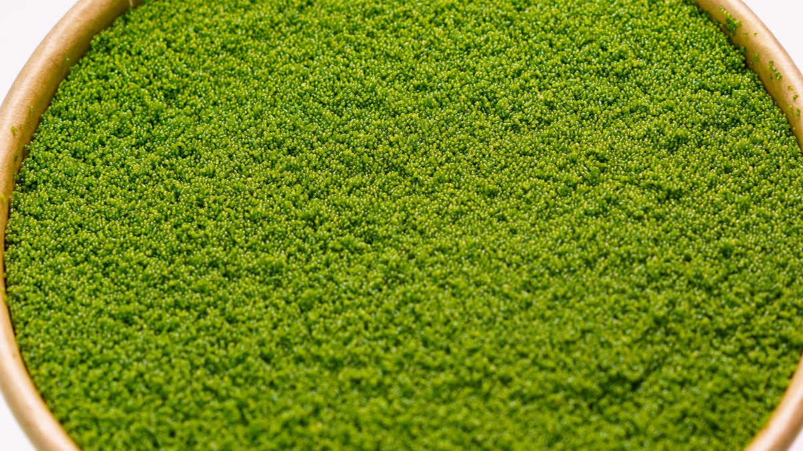
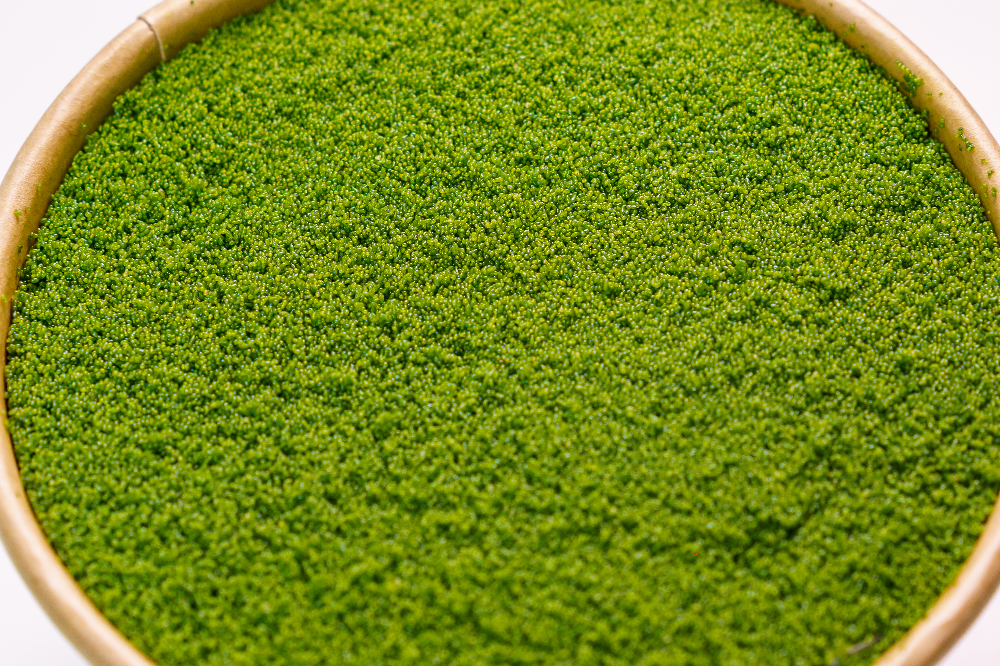
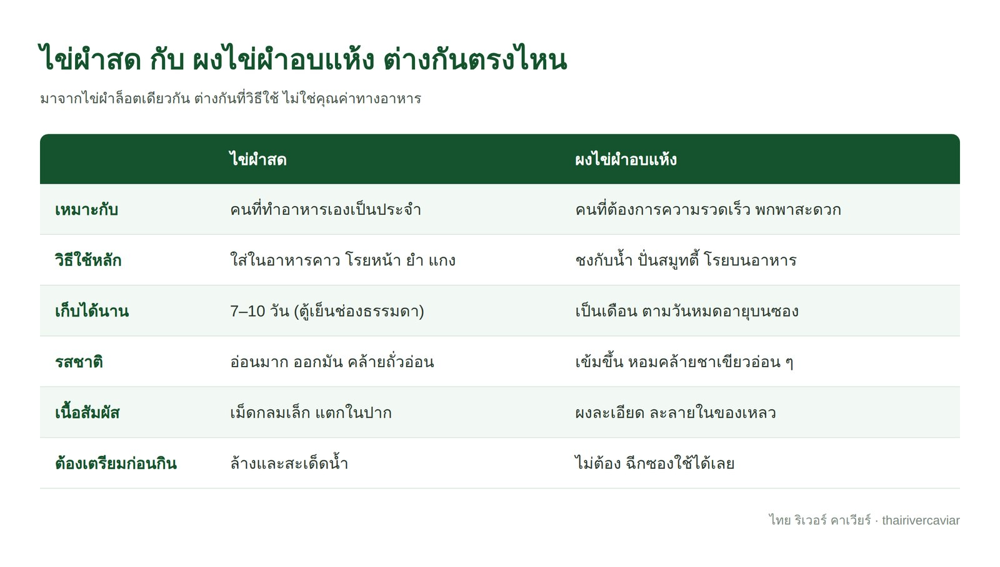
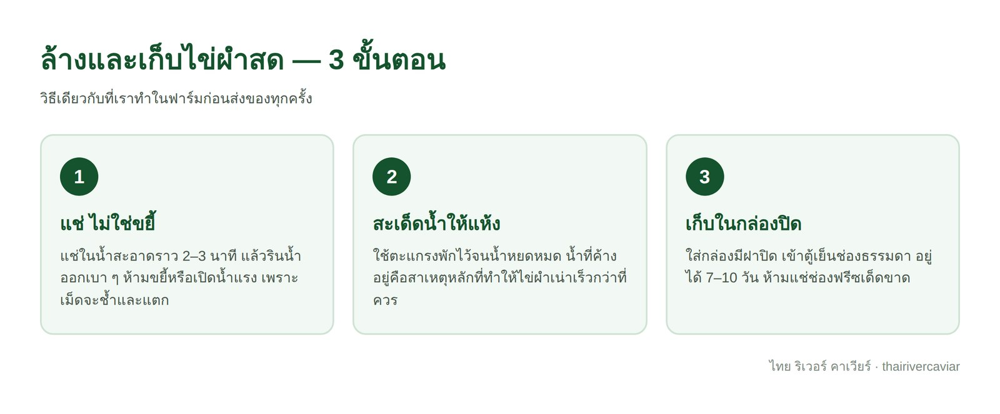
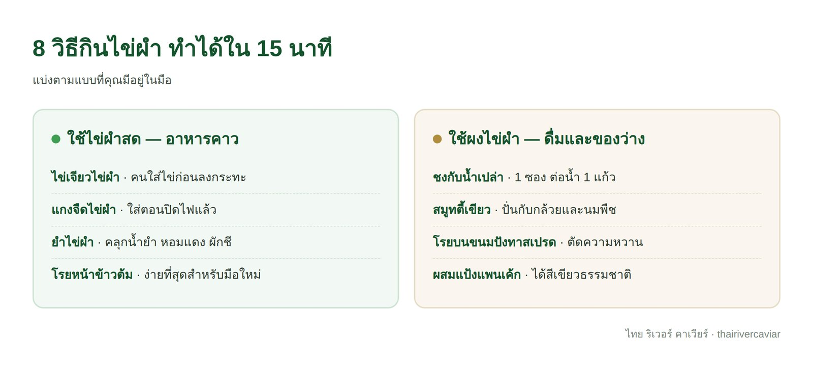

assets/images/journal-08.jpg
ไข่ผำกินได้ทั้งแบบสดและแบบผงอบแห้ง ไม่ต้องปรุงซับซ้อนและไม่ต้องปอกอะไรทั้งสิ้น — ไข่ผำสดใช้เหมือนผักใบเขียวทั่วไป โรยลงจานตอนใกล้เสร็จ ส่วนผงไข่ผำใช้ชงกับน้ำหรือโรยบนอาหารได้ทันที
แต่คำถามที่เราถูกถามบ่อยที่สุดในฐานะคนปลูก ไม่ใช่ “ทำเมนูอะไรได้บ้าง” — เป็น “แล้วมันรสชาติยังไง” และ “ซื้อมาแล้วเก็บยังไงไม่ให้เสีย” บทความนี้ตอบทั้งหมดตั้งแต่ต้นจนจบ
ไข่ผำ (ชื่อวิทยาศาสตร์ Wolffia globosa) คือพืชดอกที่เล็กที่สุดในโลก ลอยเป็นแพอยู่บนผิวน้ำจืด แต่ละเม็ดคือต้นไข่ผำหนึ่งต้นที่สมบูรณ์ในตัวเอง ขนาดราว 1 มิลลิเมตร เล็กกว่าเมล็ดงา

assets/images/wolffia-closeup.jpg
สิ่งที่ทำให้ไข่ผำต่างจากผักใบทั่วไปคือ มันไม่มีราก ไม่มีลำต้น ไม่มีใบที่ต้องเด็ดทิ้ง ทั้งต้นคือส่วนที่กินได้ ไม่มีเศษเหลือทิ้งเลยสักนิด และเพราะเป็นพืชน้ำที่ดูดสารอาหารผ่านผิวโดยตรง มันจึงโตเร็วมาก — เพิ่มจำนวนเป็นสองเท่าได้ในเวลาไม่กี่วัน
ในไทยเรียกกันหลายชื่อ ทั้ง “ผำ” “ไข่ผำ” และ “ไข่น้ำ” ซึ่งหมายถึงพืชชนิดเดียวกัน คนอีสานรู้จักและกินกันมานานหลายชั่วอายุคน ส่วนตลาดโลกเพิ่งเริ่มสนใจในช่วงไม่กี่ปีมานี้ในฐานะแหล่งโปรตีนจากพืช
ไข่ผำสดมีรสอ่อนมาก ออกไปทางมันเล็กน้อยคล้ายถั่วอ่อน ไม่มีกลิ่นคาวและไม่มีรสขม เนื้อสัมผัสเป็นเม็ดกลมเล็ก ๆ ที่แตกในปาก คล้ายไข่ปลาคาเวียร์ — ซึ่งเป็นที่มาของชื่อแบรนด์เรา
ผงไข่ผำอบแห้งจะเข้มขึ้น มีกลิ่นหอมแบบใบชาเขียวอ่อน ๆ เพราะความชื้นถูกดึงออกไปแล้ว รสชาติจึงกระจุกตัว คนที่ชงผงไข่ผำครั้งแรกมักบอกว่า “คล้ายมัทฉะแต่ไม่ขม”
จุดสำคัญ: เพราะรสอ่อนมาก ไข่ผำจึงแทบไม่เปลี่ยนรสชาติอาหารเดิมของคุณ นี่คือเหตุผลที่มันเข้าได้กับทั้งอาหารคาวไทย ขนมปัง และเครื่องดื่ม
ก่อนที่คำว่า “ซูเปอร์ฟู้ด” จะเข้ามาในภาษาไทย ไข่ผำอยู่ในสำรับอาหารอีสานมาก่อนแล้ว ชาวบ้านช้อนขึ้นมาจากหนองน้ำในหน้าฝนซึ่งเป็นช่วงที่ไข่ผำขึ้นดีที่สุด แล้วเอาไปทำอาหารในวันเดียวกัน
เมนูดั้งเดิมที่พบบ่อยที่สุดคือ แกงผำ ซึ่งเป็นแกงใส่ผำกับผักพื้นบ้าน และ ไข่เจียวผำ ที่ทำง่ายที่สุด บางพื้นที่นำไปทำห่อหมกหรือคลุกกับข้าวเหนียวกินเป็นมื้อหลัก
จุดที่เปลี่ยนไปในปัจจุบันไม่ใช่วิธีกิน แต่คือแหล่งที่มา — สมัยก่อนหนองน้ำธรรมชาติยังสะอาดพอ แต่ทุกวันนี้แหล่งน้ำเปิดมีความเสี่ยงจากน้ำเสียและสารเคมีทางการเกษตร นี่คือเหตุผลที่การเพาะเลี้ยงในระบบควบคุมกลายเป็นเรื่องจำเป็น ไม่ใช่เรื่องหรูหรา
นี่คือคำถามที่ตัดสินใจยากที่สุดสำหรับคนซื้อครั้งแรก คำตอบสั้น ๆ คือ เลือกตามวิธีที่คุณจะกินจริง ไม่ใช่ตามคุณค่าทางอาหาร เพราะทั้งสองแบบมาจากไข่ผำล็อตเดียวกัน

assets/images/journal-08-compare.jpg
สรุปให้ง่ายที่สุด: ถ้าคุณทำอาหารเองเกือบทุกวัน เลือกไข่ผำสด ถ้าคุณอยากได้อะไรที่ฉีกซองแล้วกินได้เลยตอนเช้าก่อนออกจากบ้าน เลือกผงไข่ผำ
ไข่ผำสดเป็นพืชน้ำ จึงมีน้ำเป็นองค์ประกอบสูงและเสียได้เร็วกว่าผักใบทั่วไปถ้าเก็บผิดวิธี สามขั้นตอนนี้คือสิ่งที่เราทำในฟาร์มก่อนส่งของทุกครั้ง และคุณทำซ้ำที่บ้านได้

assets/images/journal-08-steps.jpg
ไข่ผำสดที่เก็บถูกวิธีจะอยู่ได้ 7–10 วันในตู้เย็นช่องธรรมดา และควรกินให้หมดภายใน 7–10 วันจะดีที่สุด สังเกตง่าย ๆ ว่ายังดีอยู่ไหม: สีต้องเขียวสด ไม่ซีดเป็นเหลือง เม็ดยังแยกกันเป็นเม็ด ไม่จับตัวเป็นก้อนเมือก และไม่มีกลิ่นเปรี้ยว
ห้ามแช่ช่องฟรีซ — น้ำในเซลล์จะขยายตัวจนผนังเซลล์แตก พอละลายแล้วเนื้อสัมผัสจะเละและสีคล้ำ ถ้าอยากเก็บยาวเป็นเดือน ให้เลือกซื้อแบบผงอบแห้งตั้งแต่แรกจะดีกว่า
ปัญหาที่คนเจอบ่อยที่สุดคือผงลอยเป็นก้อนบนผิวน้ำ วิธีแก้คือ ใส่ผงลงในแก้วเปล่าก่อน แล้วค่อยเทน้ำตามทีละน้อยพร้อมคน ไม่ใช่โรยผงลงไปในน้ำที่เต็มแก้วแล้ว
อุณหภูมิน้ำก็มีผล น้ำอุณหภูมิห้องหรือน้ำเย็นจะละลายได้เนียนกว่าน้ำร้อนจัด และถ้าชงกับนมพืชหรือน้ำผลไม้ที่มีความข้นอยู่แล้ว ผงจะกระจายตัวง่ายขึ้นไปอีก
เราแบ่งเป็นสองกลุ่มตามแบบที่คุณมีอยู่ในมือ ทุกเมนูใช้เวลาไม่เกิน 15 นาที และไม่ต้องใช้อุปกรณ์พิเศษ

assets/images/journal-08-menu.jpg
ไข่ผำเป็นอาหาร ไม่ใช่ยา จึงไม่มี “ขนาดรับประทาน” ที่ตายตัวแบบยา สิ่งที่เราแนะนำคือใช้เป็นส่วนหนึ่งของมื้ออาหารปกติ — ผงไข่ผำวันละ 1 ซอง (0.5 กรัม) หรือไข่ผำสดประมาณ 1–2 ช้อนโต๊ะต่อมื้อ เหมือนที่คุณกินผักชนิดอื่น
ถ้าคุณกำลังกินเพื่อเสริมสารอาหารบางอย่างโดยเฉพาะ เช่น วิตามินบี 12 ปริมาณที่ควรได้รับต่อวันขึ้นอยู่กับอายุ ภาวะสุขภาพ และอาหารอื่นที่คุณกินอยู่ เราเขียนเรื่องนี้ไว้ละเอียดแล้วในบทความแยกต่างหาก
อ่านต่อ: วิตามินบี 12 สำคัญยังไง ใครเสี่ยงขาด และได้จากอะไรบ้าง
ผู้ที่ตั้งครรภ์ ให้นมบุตร มีโรคประจำตัว หรือกำลังใช้ยาประจำ ควรปรึกษาแพทย์หรือนักกำหนดอาหารก่อนปรับอาหารประจำวัน บทความนี้เป็นข้อมูลทั่วไปเพื่อการศึกษา ไม่ใช่คำแนะนำทางการแพทย์
ไข่ผำเป็นสินค้าที่ดูด้วยตาเปล่าแล้วแยกของดีกับของไม่ดีได้ยาก เพราะสีเขียวเหมือนกันหมด สี่ข้อนี้คือสิ่งที่ควรถามคนขายก่อนซื้อ ไม่ว่าจะซื้อจากเจ้าไหนก็ตาม
ถ้าคนขายตอบสี่ข้อนี้ได้ครบและตอบได้ทันที นั่นเป็นสัญญาณที่ดีกว่าคำโฆษณาใด ๆ บนหน้ากล่อง
ไข่ผำสดที่ผ่านการล้างสะอาดกินดิบได้ และเป็นวิธีที่คนอีสานกินกันมานาน แต่ควรมั่นใจว่ามาจากแหล่งที่ควบคุมความสะอาดได้ ไข่ผำที่ช้อนจากแหล่งน้ำธรรมชาติมีความเสี่ยงเรื่องการปนเปื้อนสูงกว่ามาก
ต่างกันคนละชนิดเลย ไข่ผำเป็นพืชดอก (มีดอกจริง ๆ แม้จะเล็กจนแทบมองไม่เห็น) ส่วนสาหร่ายอย่างสไปรูลิน่าเป็นสิ่งมีชีวิตเซลล์เดียว รสชาติจึงต่างกันมาก ไข่ผำอ่อนกว่าและไม่มีกลิ่นทะเล
ไข่ผำเป็นผักชนิดหนึ่ง เด็กที่กินอาหารตามวัยได้แล้วก็กินได้เหมือนผักอื่น ๆ แนะนำให้เริ่มจากปริมาณน้อยเช่นเดียวกับการแนะนำอาหารใหม่ทุกชนิด และสังเกตอาการแพ้
ผงอบแห้งที่ปิดผนึกในซองและเก็บในที่แห้ง พ้นแสงแดด อยู่ได้นานเป็นเดือนตามวันหมดอายุบนบรรจุภัณฑ์ ซองที่เปิดแล้วควรใช้ให้หมดในครั้งเดียว เพราะความชื้นในอากาศจะทำให้ผงจับตัว
ทุกวิธีในบทความนี้ตั้งอยู่บนสมมติฐานเดียวคือ ไข่ผำที่คุณมีอยู่สะอาดพอที่จะกิน — และตรงนี้คือจุดที่แหล่งที่มาสำคัญมากกว่าวิธีล้าง เพราะการล้างที่บ้านช่วยเอาสิ่งสกปรกที่มองเห็นออกได้ แต่ไม่ได้แก้ปัญหาการปนเปื้อนที่เกิดขึ้นตั้งแต่ในแหล่งน้ำ
ที่ฟาร์มของเรา ไข่ผำเพาะเลี้ยงในระบบปิดที่ควบคุมน้ำเองทั้งหมด ไม่ได้ช้อนจากแหล่งน้ำธรรมชาติ และส่งตรวจค่าเชื้ออีโคไลกับห้องปฏิบัติการทุกเดือน เพราะเราส่งออกไปญี่ปุ่นและอเมริกาเป็นหลัก มาตรฐานที่ปลายทางจึงเป็นตัวกำหนดวิธีทำงานของเราตั้งแต่ต้นทาง
ไทย ริเวอร์ คาเวียร์ เพาะเลี้ยงไข่ผำเองในระบบปิด มีทั้งแบบสด ผงอบแห้ง 100% และเยลลี่พร้อมทาน สั่งซื้อปลีกได้ทันที ส่วนผู้ซื้อเชิงธุรกิจขอตัวอย่าง 20 กรัมฟรีไปส่งตรวจแล็บเองได้